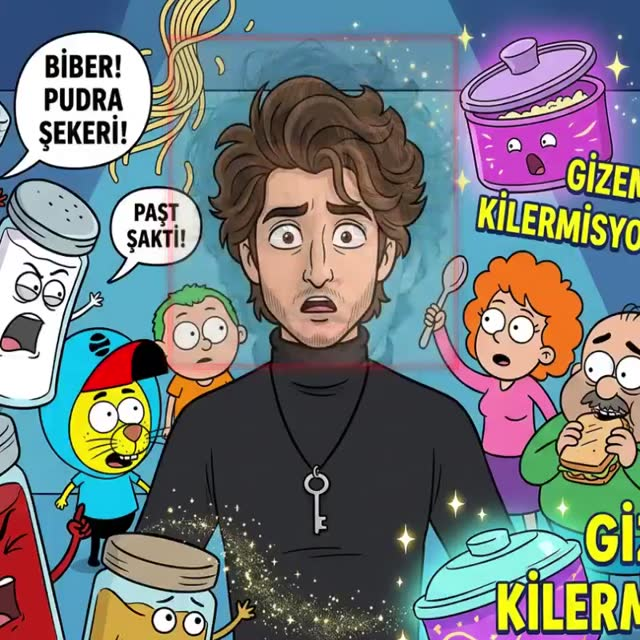

Kurslar
Hangi gezegenden başlayacaksın?
Her patika 8 hafta sürer ve senin ürettiğin gerçek bir projeyle biter.

Gezegen 1 · Başlangıç
Temel AI Creator
Hikâye Anlatıcısı Final: 60–90 sn kendi videon
Gezegen 2 · Orta
Orta AI Creator
Evren Kurucusu Final: kendi mini evrenin
Gezegen 3 · İleri
İleri AI Filmmaker
Küçük Yönetmen Final: 2–3 dk kısa filmin
Gezegen 4 · İleri